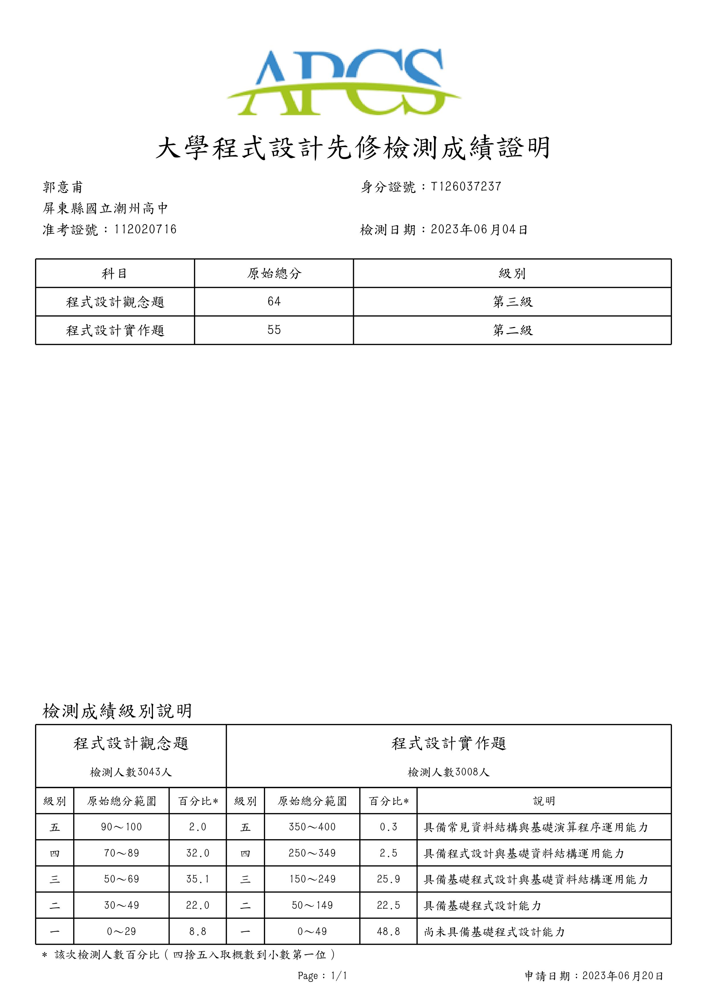

2023/6 APCS檢測心得
考試地點：屏東大學民生校區
這是我第一次考APCS，這次觀念跟實作都有報，比較有把握的是觀念題，不過能拿幾級分也很難說，因為觀念是考40題
，之後隨機抽25題算分，每題4分，實作題就很明確了，一題100，滿分400，不過每題都有配分，所以不用全對也能拿分。
學C++大約半年，當然不是只學C++，途中還有接觸HTML、CSS、C#、Python爬蟲 等等，比較認真解題的時候大約是考前一個月，還有一開始學的時候。
有趣的是考前一個禮拜我還在看機器學習（用Python 編譯），完全沒有關聯啊www，考完試後沒意外我還是會繼續研究機器學習相關知識。
P.S：這次考前2天剛好發燒重感冒，考試當天身體狀況不太好，考試過程全程鼻塞，但還是把它考完了，因為我認為是自己自願報名的，可以的話一定要考完。
2023/06/04 筆
檢測結果 : 觀念題3級分/實作題2級分
證明 :
